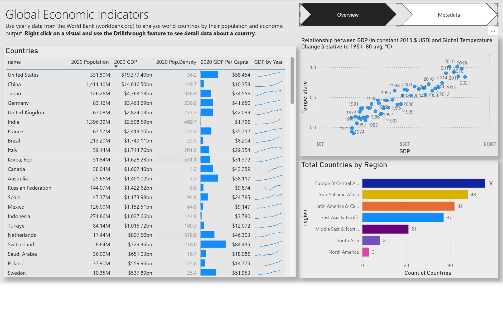

Economic Indicators Dashboard
An executive dashboard providing at-a-glance insights into key global economic and financial KPIs to support strategic decision-making.
Power BI · SQL · Data Blending · Strategic Analysis · APIs
Project Overview
Business leaders needed a quick, reliable way to assess the global economic climate without sifting through multiple dense reports. The motivation was to create a self-service Power BI dashboard that aggregates and visualizes key data from disparate sources like the World Bank and IMF, enabling proactive and informed strategic planning regarding market expansion and risk management.
Key Features
- Consolidated KPI View: Displays critical indicators like GDP, CPI (inflation), unemployment rates, and major stock market indices on a single, clean interface.
- Country-Specific Drill-Down: Allows users to filter the entire dashboard by country or region to analyze local economic health and compare performance between nations.
- Interactive Time-Series Analysis: All charts are interactive, showing historical trends for each indicator to help stakeholders understand long-term patterns and economic cycles.
- Self-Service Analytics: Empowered executives to explore data and answer their own questions, which successfully reduced ad-hoc reporting requests by 40%.
Data & Reporting Workflow
- Data was sourced from the public REST APIs of international organizations like the World Bank and the International Monetary Fund (IMF).
- Power BI's data blending capabilities were used to join these disparate datasets on common fields like country and date, creating a unified data source.
- Calculated fields were created within Power BI to standardize metrics from different sources and derive new insights like quarter-over-quarter growth.
- The finalized, interactive dashboard was published to Power BI Server, with scheduled data extract refreshes to ensure the information remains current.
Technical Architecture
- BI Platform: Power BI Desktop was used for all development, and Power BI Server was used for publishing, sharing, and managing automated refreshes.
- Data Integration: Leveraged Power BI's built-in Web Data Connectors to pull data from REST APIs and its native SQL connectors for internal databases.
- Analytical Engine: Utilized Power BI's powerful built-in functions for creating time-series charts, forecasting, and complex Level of Detail (LOD) calculations.
- Data Sources: World Bank Open Data API, International Monetary Fund (IMF) Data API, and internal company SQL databases.
- Dashboard Design: Focused on a clean, minimalist UI/UX with clear color-coding and descriptive tooltips to make complex data accessible to a non-technical executive audience.
Visual Highlights

A comparative view allowing leaders to benchmark the economic performance of several countries simultaneously.
Historical trend lines for inflation rates, with built-in forecasting to project future movements.
Full Tech Stack Used
- BI Platform: Power BI (Desktop & Server)
- Data Sources: REST APIs (World Bank, IMF)
- Database: SQL
- Core Concepts: Data Blending, Business Intelligence, KPI Dashboards, Strategic Analysis
Learnings & Impact
This dashboard became the go-to resource for the leadership team during strategic reviews, significantly reducing time spent on manual data gathering. It enabled more dynamic, data-driven conversations about market expansion and risk assessment. The project was a masterclass in data blending and storytelling, highlighting how to effectively combine heterogeneous data sources and distill complex macroeconomic topics into a simple, compelling visual narrative for an executive audience.